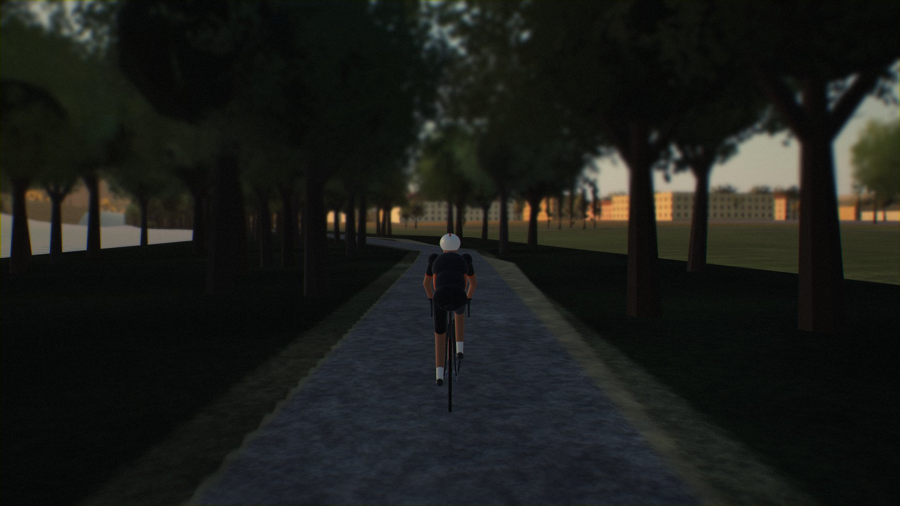

Tiber river park
1.8 km to go · about 5 min
Ponte Felcino in 1.7 km
Sunny · 14°
Light crosswind 9 km/h
KICKR CORE · hills 35 %
Trainer lost · tap to reconnect
24.6
km/h
Speed
km/h
24:42
Time
9.1
km
Distance
km
1.2
%
Grade
142
W
Power
6
/ 11
Gear
Pause
Finish
1.2 % · 142 W · gear 6